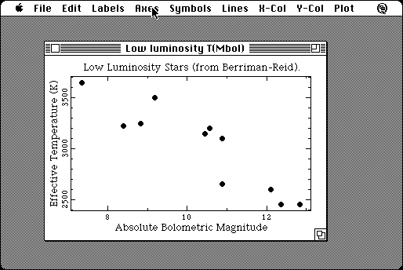

Download
quad-plot-114.zip (410K) QUAD-Plot 1.14 repackaged into a zipped hfs disk image and checksum file. The disk image can be mounted with Mini vMac.
quad-plot-114.hqx (582K) QUAD-Plot 1.14 in the original format.
copyright: Robin Harmon
mod date: Oct 22, 1996
license: shareware
last known url
(gone)
A "plotting application", "designed to make it quick and easy to view data and produce high quality printed graphs." For "System 7 or later".

If you find these downloads useful, please consider helping the Gryphel Project, which hosts them.
Here are the md5 checksums for the downloads, signed with Gryphel Key 5:
--------- GRY SIGNED TEXT --------- 36137840385210b90c034536fe49116c quad-plot-114.zip 551e93e393624e7ac31192b840a49060 quad-plot-114.hqx ------- BEGIN GRY SIGNATURE ------- Gry/4Xa8CFcUzxdN/F0F/T0C8DAZ1fKFFCoB4+X9Edp13kvoib5MyMoalqd/Unrw +VyBdLgRA4LODIArKnTyp9+8fr3RM2KlTqph/PZzrkMXAoZEi7J/E8Y6d+5mz9wH TE+JQtFcpuZuNbHbGJX7P/qE3BeHGo/2LBjo/+AgH+7edC8PYKlG0AU0/R9z8jKl -------- END GRY SIGNATURE --------